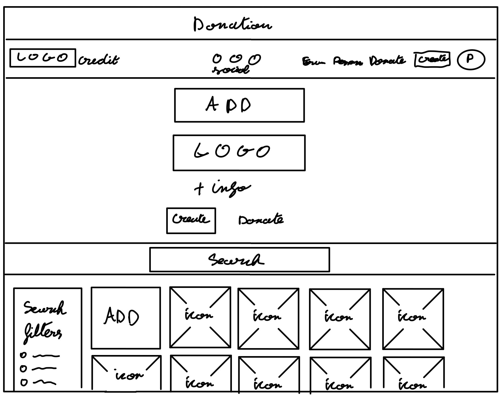
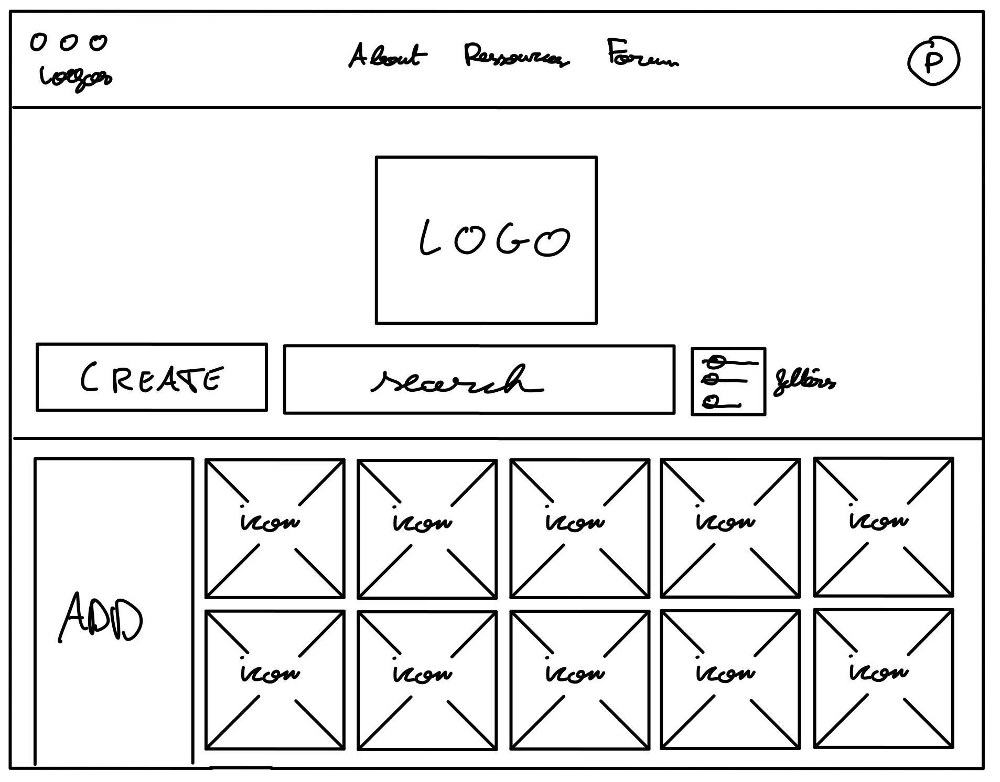

Using the favorite website you chose in homework 1, create a wireframe for one page of it using pen/paper, PowerPoint, or any your tool of choice. (use the 'img' tag!) Make sure to let us know what the name of your website is (Use the 'p' tag!)

Try to improve the website you've chosen, and create a redesigned wireframe of one page for the same website using the principles of visual hierarchy that you learned from the article.

What is the goal of the website? Who is it intended for? How does the design accomplish this? Write 2-3 sentences answering these questions. (Use the 'p' tag again!)
The website macOSicon is made for people who want a more consistant design in their app doc on their mac. If Apple was able to force every app to use their frame of icon with iOS, on macOS they couldn't. As not every app are downloaded from the app store, sometimes app can be downloaded via the web. Some app do not stick to the new design imposed by the update macOS BigSur, and inconsistancy can be disturbing. It is why someone created this website where people can upload icons to make their mac experience much more pleasent.
Write 2-3 sentences about what problems your redesign addressed, and how it solved them.
Some informations where doubled or tripled around the website, which can led arrivers to be kinda lost, even if the website in it's entirety is fairly straighforward. Also, some key options took me time to really use, like the filter botton. Placing it next to the search bar is more conventional and could be more instinctive.